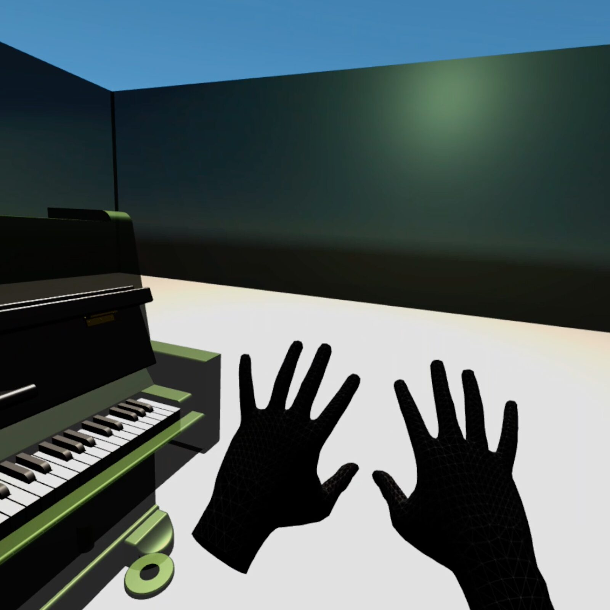
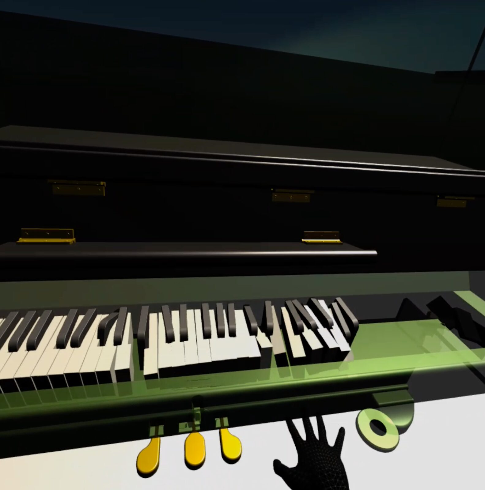
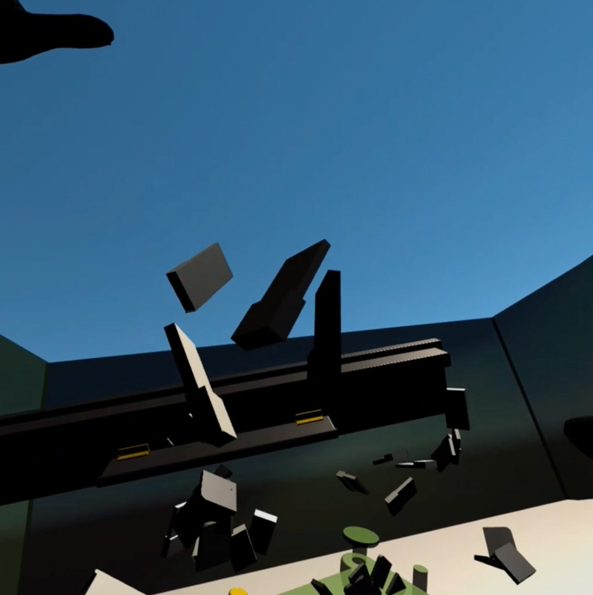
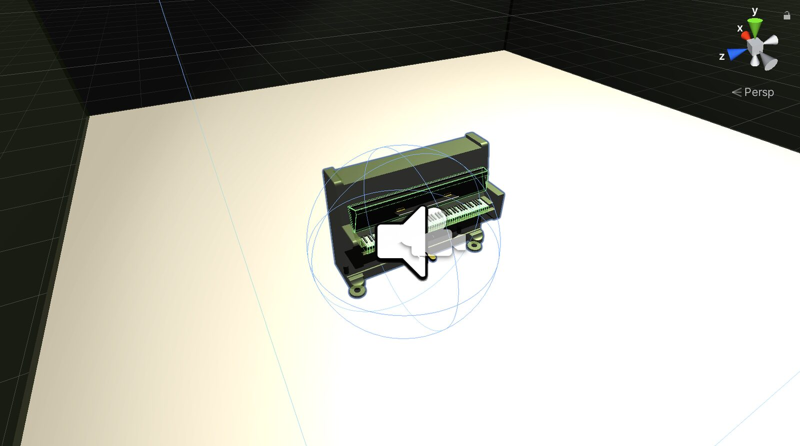
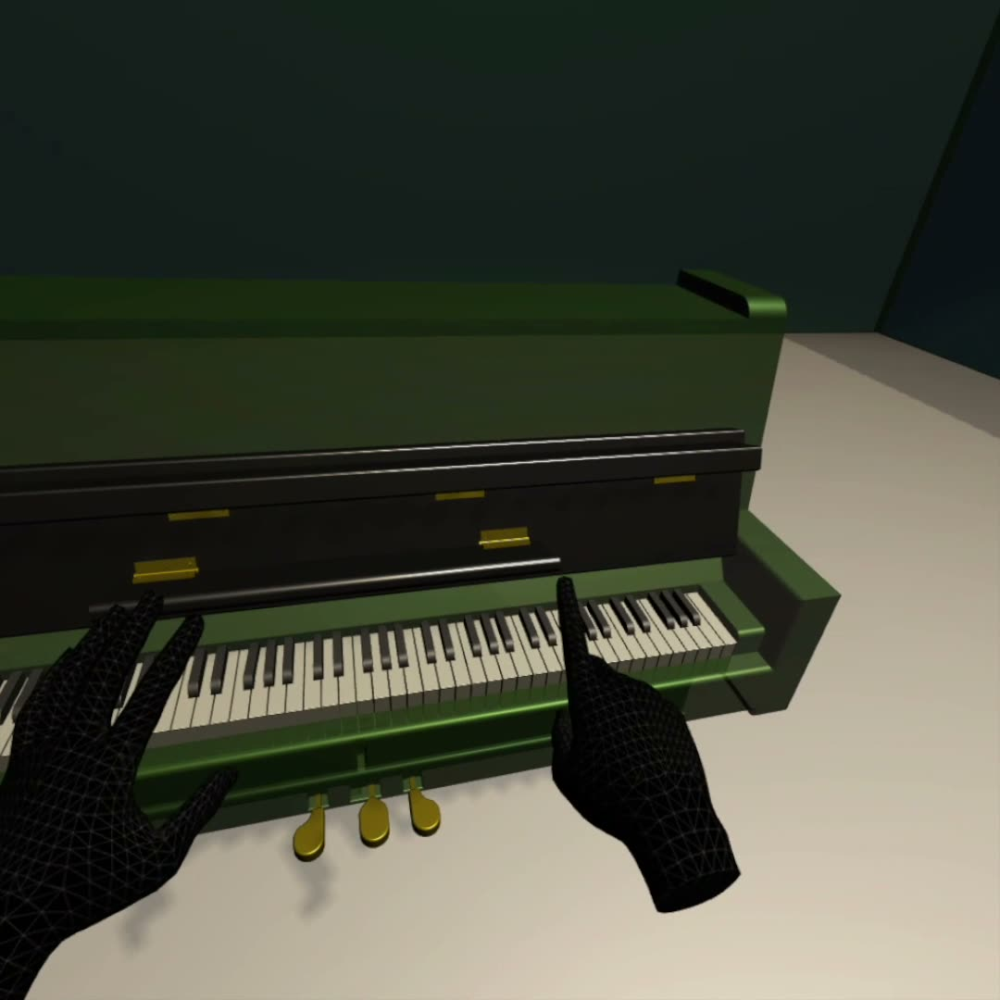

Study for virtual keyboard instrument and hand tracking in a VR environment
Abstract:
This sound installation explores the non-physicality of virtual environments and their impact on interactions with virtual musical instruments. Using hand-tracking technology, visitors of this virtual reality (VR) sound installation can play a virtual keyboard instrument displayed via a head-mounted display. Following an experimental approach to contemporary piano music, in this installation the entire instrument behaves differently compared to the real world. Due to the virtual-physical system, the expected quickly transforms into the unexpected. The implications of an instrument with free-floating keys that produce sound when they collide are to be explored by the visitors.
Project Description
Study for virtual keyboard instrument and hand tracking in a VR environment is part of a series of artistic experiments in progress. This series explores virtual reality (VR) as a performance space for contemporary music and for interactive art works.
The visitors enter a virtual environment by putting on a head-mounted display (HMD). The hand tracking of the HMD will immediately allow them to see their hand and finger movements in real time. When looking around in this virtual environment they find an object that looks like a classical piano. The reduction of the scene to these few elements aims to imply the form of interaction, namely to touch the piano keyboard. However, when interacting with this keyboard, it will behave differently from the experiences visitors have with a real piano. The keys are lose, earth's gravitational pull is non-existent, and the piano disentangles over time. Piano sound samples are triggered upon collision of the keys with other objects, however the orientation of the floating piano keys controls the direction of sample playback, which creates sonic effects like unnatural sustains and glitches, linked to the rotation of the free floating parts of the expanding instrument. After every 2 minutes, the movements are quickly rewound and the piano returns to its original state. An invitation for the next round of experiments.
Concept
Many musical compositions are building up the listeners’ expectations over time and use the element of surprise when introducing new musical elements, to trigger an emotional response [4]. This sound installation follows a similar approach, but is taking the visual component of the VR environment and the cultural situatedness of established musical instruments into account.


Real-time hand tracking and the appearance of a classic piano will raise certain expectations for the visitor.
The piano is a well established acoustic musical instrument, with a plethora of repertoire ranging from the Baroque epoch to even contemporary, and popular music written and performed today. Pianos are in many music class rooms across western elementary schools and also exist in many households. A majority of people have an expectation for the sound of the piano and may even have touched piano keys themselves. Hence, they know the form of the finger interactions with the keys that triggers the sound.
The role of the piano already changed during the last century. With experimental music by avant-garde artists like John Cage, who placed objects like coins and screws between the strings to extend the sound palette of the instrument (e.g Sonata V of Sonatas and Interludes for prepared piano), a new movement of art practice emerged during the 1960’s. Through the diversity of art forms and the different ways of presentation (performance events, video art, conceptual art, noise music concerts, etc.), an international network of artists called Fluxus, largely expanded the definition of art by breaking the boundaries and thereby the audiences’ expectations, using these radically new methods. From 1996 onwards, composer Peter Ablinger further shaped the sound of the piano by facilitating a computer-controlled piano to read-out texts in his compositions for Speaking Piano, using a customised, electronically controlled repetition mechanic. Although these works widened the sound produced by and the interactions involved with the piano, art works in real-world environments are always restricted by the boundaries of physics.
Virtual Reality (VR) allows to create entire environments (or virtual worlds) that are artistically motivated and can fully immerse the audience [2, 3]. VR technology matured over the last years and stand-alone head-mounted displays (HMD) e.g Oculus Quest [6], with integrated 6 DoF position tracking and input control methods that include the tracking of the users’ hands in real-time, open up new possibilities for the development of virtual instruments [8, 5], the incorporation of virtual and real performers [1] and immersive art production and distribution [7]. The freedom when designing virtual environments is much larger than for real performance and installation spaces, as VR can integrate real world physical properties (such as gravity, collisions, real dimensions) but is not restricted by those. Hence, VR art installations can entirely break with realism.


Interaction with virtual keyboard facilitates artificial physics conditions. The sound engine is controlled by key collision and orientation.
The sound installation presented in this paper plays with this freedom and facilitates this new dimension at the same time for the control of the sound events that are triggered by the non-physical behaviour of the scene, the real-time interactions of the visitor with the piano, and the reconfiguration of the known into the unknown with regard to piano performance (see Fig. 2 and 3). Depending on the interactions of the visitor with the virtual objects, the sound of the installation evolves and sounds differently each time.


Depending on the interactions of the user with the virtual instrument and the position in the room, the development of the sound and the scene differ.
Installation Notes
This VR sound installation is implemented using the Oculus SDK [5] inside the Unity Software game development engine (2019.4.1.1f). The scene holds 88 independent sound sources mapped to the piano keys, which are controlled by the Unity physics engine, which tracks all object collisions and orientations in the scene, including collisions with the hands of the visitor. The spatial audio rendering of the scene considers the position of the visitor and that of all sound radiating objects, to create an immersive auditory scene where visitors can follow the auditory cues of the moving sound sources around them.
Installation Requirements
Installation Requirements should include:
Space Requirements
Visitors will wear a head mounted display (HMD) and interact with a virtual keyboard instrument. Hence the installation needs to be in an empty room (or an empty corner of a room), where at least 4x4 meters of space is required.
Floor Plan & Logistical Requirement

Image 4Overview of the virtual reality scene. The visitor can freely walk around in the virtual environment and interact with the musical instrument. Note, all keys of the keyboard will expand, filling the entire space, controlled by the hand movements of the visitor. Visitors may want to follow individual free floating keys, where each key is an independent sound radiating object rendered in full 3D spatial audio.
In the case that the installation is presented in a corner of a room, the space needs to be clearly marked by a barrier, so that it is not crossed by any non-installation visitors (danger of visitor wearing HMD bumping into trespasser). Although the sound is provided via the HMD (the installation does not produce loud noise), the surrounding noise shall be low, to allow the visitor to become fully immersed with the sound of the installation and not to be distracted by the environment. (Note that the Oculus Quest has an “open headphone” design.)
Setup time: ca. 15 Minutes
Operation time: ca. 45 Minutes (then the HDM needs to charge for ca. 1h)Equipment Requirement

Case 1 - Personal Presentation: The artist will bring all required technical equipment. HMD with integrated cameras for position tracking, hand tracking, integrated open headphones and pre-installed software (Oculus Quest with installed software). The artist will setup the installation, secure the space (check barriers) and will be present at all time that the installation is opened to assist each visitor before, during, and after the VR experience.
Case 2 - Travel Ban: For the case of travel restrictions, the installation will be provided in two forms. First, as a downloadable software (Oculus Quest support), so that HMD owners can experience the installation as an interactive scene at home with their own equipment, 2) as a non-interactive video on Youtube showing different types of interaction with the environment.
Feasibility
The proposed sound installation for NIME 2021 builds upon the Unity and Oculus Quest Frameworks that have been used in a previous project by the same artist. A related sound installation, that is part of this artistic research series on Music Performance in VR environments has been presented at the Ars Electronica Festival 2020 under the Title “Study for Saxophonist Avatar and two Loudspeakers in a VR environment” [3] as part of the KUL - SOUND CAMPUS “Metaverse” [7].
Table I. Equipment Requirements | |
|---|---|
Head mounted display (Oculus Quest) with pre-installed software & disinfectant spray to clean the HMD after each visitor | Self |
Free standing barrier | Organization |
Media

▶Demo video for the sound installation captured with Oculus Quest VR glasses, operated by the artist. All hand tracking, image, and sound processing was processed inside the HMD. No additional mastering effects were applied to the binaural sound rendering in this recording.
Acknowledgments
This project has received funding from the European Union’s Horizon 2020 research and innovation programme under the Marie Skłodowska-Curie grant agreement No 812719 (VRACE). 3D - Piano Model by Ben Morris (https://grabcad.com/ben.morris-19).
Compliance with Ethical Standards
All procedures of the artistic experiments are fully compliant with the ethical guidelines of the European Commission’s Ethics for Researchers (2013) and The European Code of Conduct for Research Integrity (2017). Specific caution to the noise level during the installation will be given to prevent hearing damage. Visitors will control the volume level on the HMD themselves.
7. REFERENCES
[1] Jack Atherton and Ge Wang. 2020. Curating Perspectives: Incorporating Virtual Reality into Laptop Orchestra Performance. Proceedings of the International Conference on New Interfaces for Musical Expression, Birmingham City University, pp. 154–159.
[2] Fede Camara Halac and Shadrick Addy. 2020. PathoSonic: Performing Sound In Virtual Reality Feature Space. Proceedings of the International Conference on New Interfaces for Musical Expression, Birmingham City University, pp. 520–522.
[3] Alex Hofmann. 2020. Sound installation: Study for Saxophonist Avatar and two Loudspeakers in a VR environment. Ars Electronica Festival 2020. https://iwk.mdw.ac.at/hofmann/myprojects/projects/2020/09/05/VR.html
[4] David Huron. 2008. Sweet anticipation: Music and the psychology of expectation. MIT press.
[5] Chase Mitchusson. 2020. Indeterminate Sample Sequencing in Virtual Reality. Proceedings of the International Conference on New Interfaces for Musical Expression, Birmingham City University, pp. 233–236.
[6] https://developer.oculus.com/documentation/unity/unity-overview/
[7] Enrique Tomás, Daniel Romero, Julia del Río. 2020. SOUND CAMPUS - Metaverse. Ars Electronica Festival 2020. https://sound-campus.itch.io/metaverse
[8] Graham Wakefield, Michael Palumbo, and Alexander Zonta. 2020. Affordances and Constraints of Modular Synthesis in Virtual Reality. Proceedings of the International Conference on New Interfaces for Musical Expression, Birmingham City University, pp. 547–550.
Musical works cited:
Peter Ablinger - Speaking Piano (https://ablinger.mur.at/speaking_piano.html; accessed 6.4.2021)
John Cage - Sonatas and Interludes
(https://johncage.org/pp/John-Cage-Work-Detail.cfm?work_ID=188; accessed 6.4.2021)
Short Bio:
Alex Hofmann is a researcher in the area of creative music technologies and a saxophone/live-electronics performer working with improvised and contemporary music. He develops tools and methods to enhance the expressiveness in live music performances by combining new sensor technologies and real-time audio processing. His work has been presented at venues such as the Akademie der Künste Berlin (DE), Berklee College of Music (Boston, US), BEK (Bergen Center for Electronic Arts, NO), and ZKM (Karlsruhe, DE).
More Infos: https://iwk.mdw.ac.at/hofmann/about/